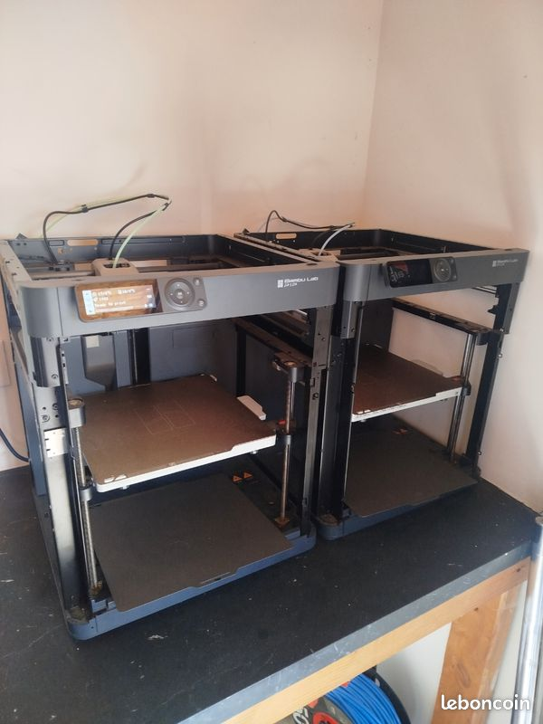
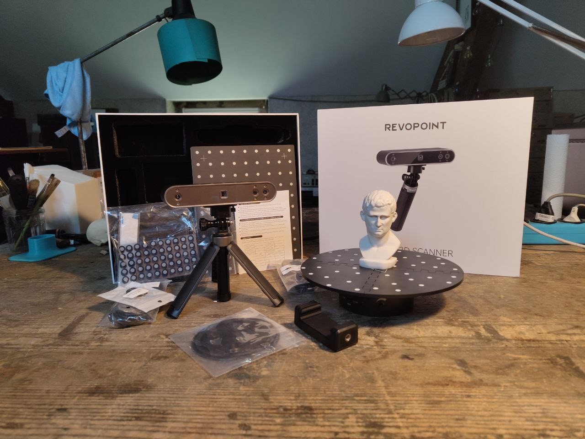
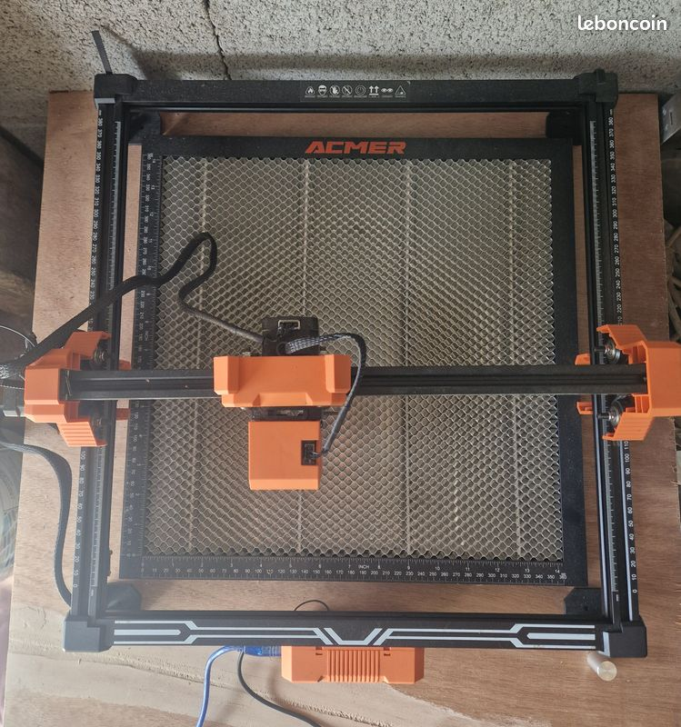

Atelier mécanique et électronique
Un espace de travail équipé pour les opérations de montage, d'ajustage, d'expérimentation et de développement électronique.
Des moyens personnels pour accompagner les études, réaliser des relevés, matérialiser des concepts et produire des pièces ou prototypes selon les besoins du projet.
Un espace de travail équipé pour les opérations de montage, d'ajustage, d'expérimentation et de développement électronique.

Fabrication additive pour les maquettes, pièces fonctionnelles, outillages et prototypes.

Acquisition de géométries existantes pour faciliter la rétroconception, la reproduction et le contrôle de formes.

Réalisation de gravures et découpes sur des matériaux compatibles, pour pièces, repérages et petites fabrications.
Définissons ensemble les moyens adaptés à votre projet.